Beacon — Find Nearby Essentials (React, Tailwind CSS, JavaScript)
Name: Chirag DasRegister Number: 2648517Course: 2 MSc AI MLSubject: FSD
Part I – Problem Definition and Innovation
I studied the search, place details and directions workflow on openstreetmap.org. My target users are people new to a city, like students who just moved to Bengaluru and need to find a pharmacy, ATM, hospital or washroom quickly.
OSM already has a search box, a details page for every place, "Query features", directions and map layers. While testing it I found these problems:
Around MG Road only 17 out of 233 places had opening hours on OSM, so the app must say clearly when hours are not known.
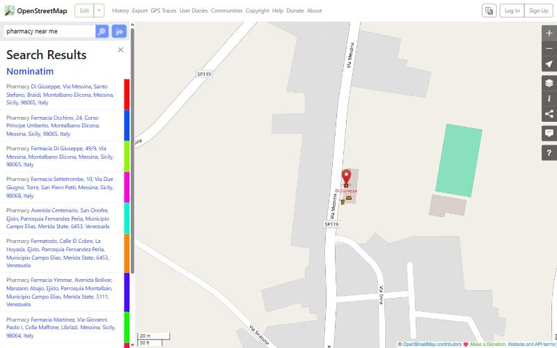
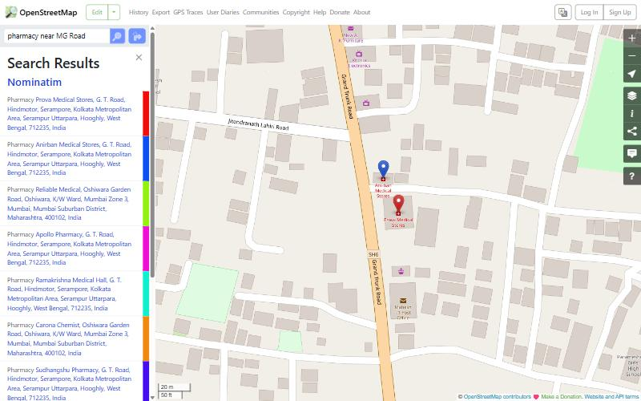
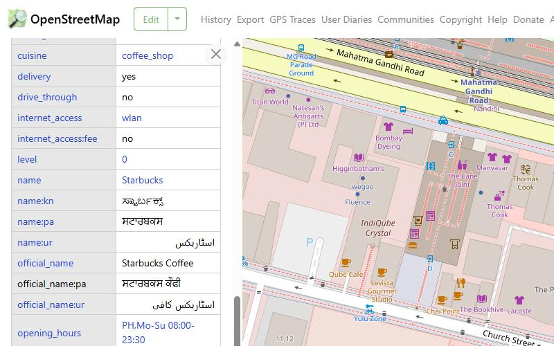
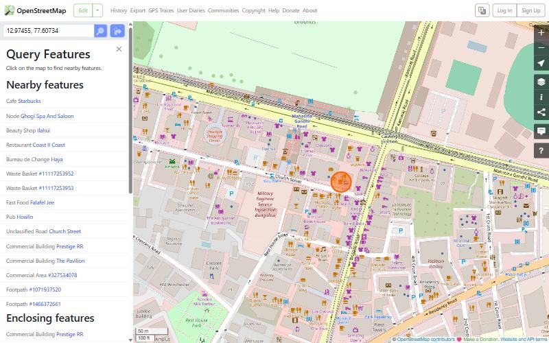
A newcomer cannot quickly find the nearest essential place that is open right now on OpenStreetMap. "near me" ignores their location, street names land in the wrong city, results have no distance or open status, and there is no simple way to get directions. In practice this means opening many results, reading raw tags, and sometimes walking to a closed shop.
Beacon is a focused web app on OpenStreetMap data. You type what you need the way you would say it, and it shows the nearest places with distance, walking time and whether they are open, then takes you there.
Search understands "pharmacy near me", "atm near MG Road" or "24/7 hospital nearby". "near me" uses your location, or your city if location is off. When a street name exists in more than one place it shows cards with the area, city and distance so you can pick, or it picks the nearest one if that is obvious. Each place has a card with Go Now, Call, Website, Save and Share, and Start opens turn-by-turn navigation for walking, cycling or driving.
The interface is built with HTML5 and Tailwind CSS. On phones the search sits on top with category chips under it, results come up in a bottom sheet and there is a tab bar at the bottom. On desktop the same parts sit in a left panel. It uses Apple's Liquid Glass style, a 3D globe at the start, and light theme by default.
Part II – JavaScript Implementation
Typing in the search box (input, debounced) loads suggestions, submitting the form runs the search, clicking a pin opens the place, right-click shows the address of that spot, keydown handles shortcuts (/ search, Esc close, L locate, 1–9 categories), pointer events drag the bottom sheet, online/offline shows a banner, and the microphone uses the speech recognition result and end events.
The Report a Problem form checks the problem type, place name, details (at least 15 characters), optional email or phone, the location pin and a consent tick. Each field is checked when you leave it and all of them on submit. Errors show under the field and as a list at the top. A valid report is saved on the device and can be posted as an OSM Note.
Suggestions come from Photon, places and nearby search from Nominatim, extra details from Overpass, routes from OSRM and place photos from Wikidata. All responses are read as JSON and converted into one common place format.
Skeleton loaders show while searching and "Finding your location" while locating. Nominatim results appear first and Overpass details are added later, since Overpass took 29 to 43 seconds in my tests. Every request has a timeout with a clear message and a retry button. Empty results offer a wider search, and if location is denied the app uses the chosen city and says so.
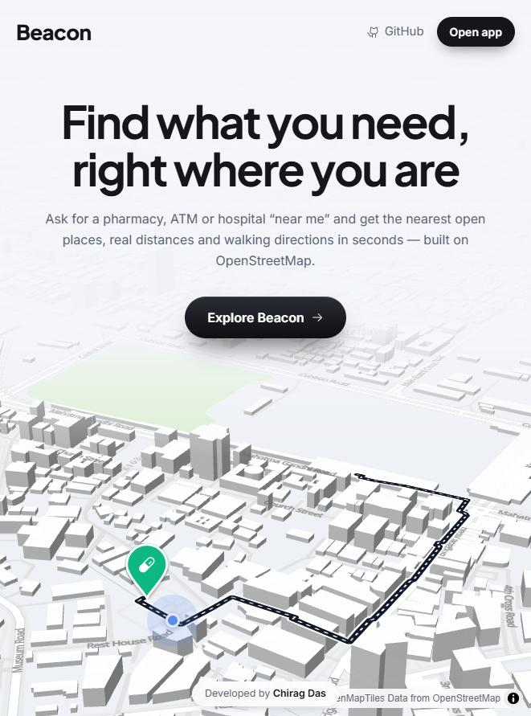
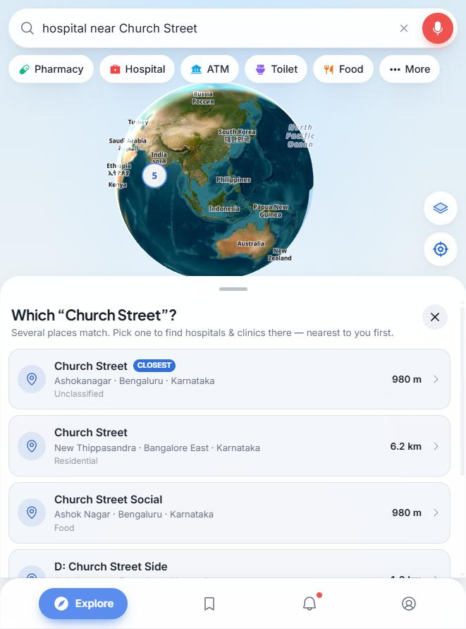
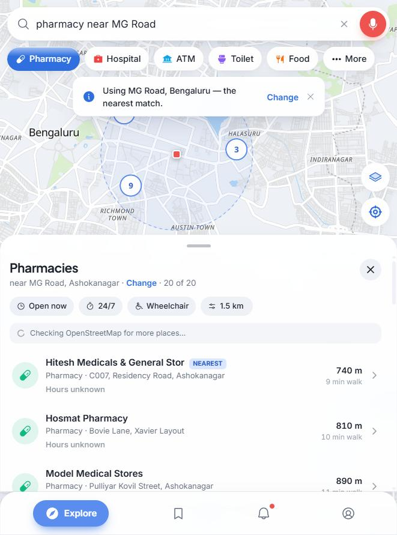
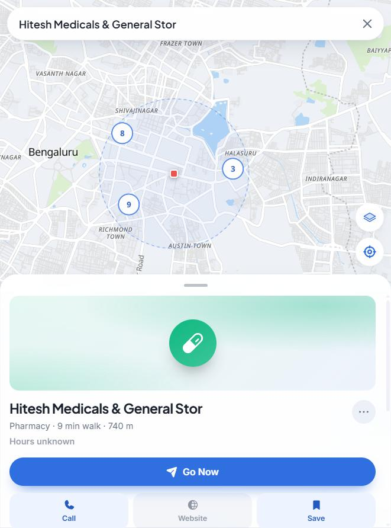
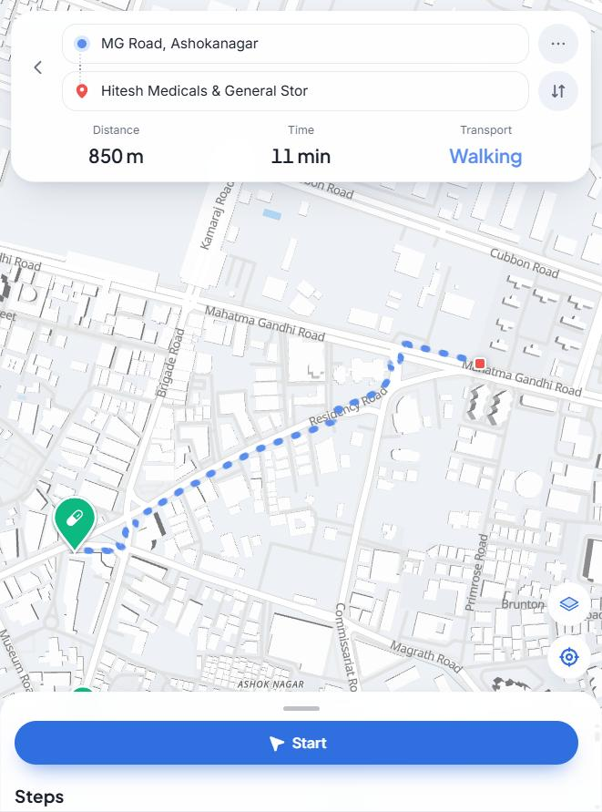
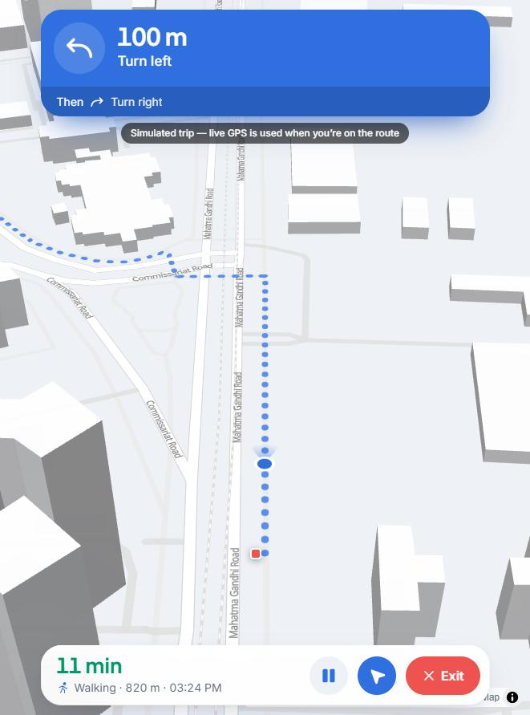
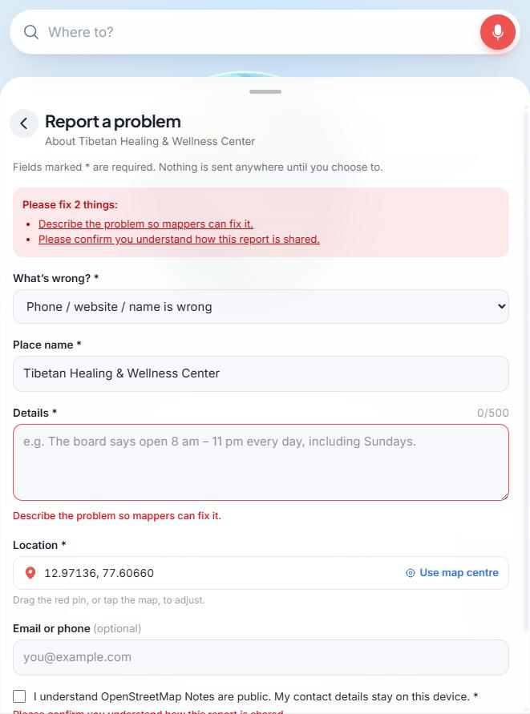
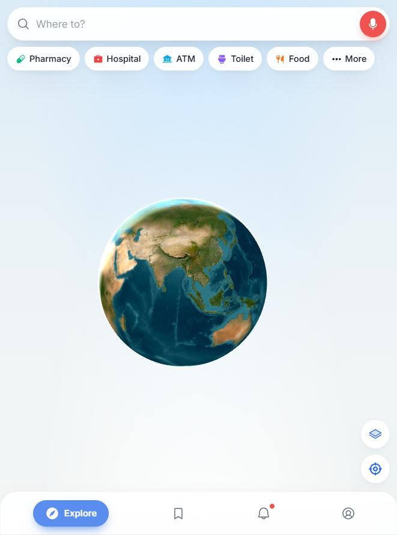
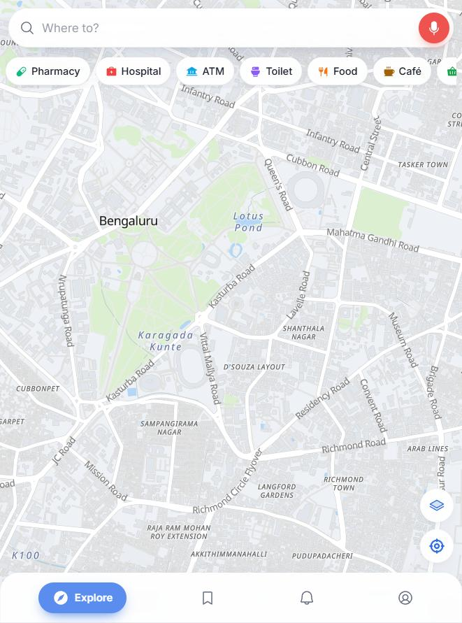
Part III – Documentation, GitHub and Deployment
Live app: chiragdascodes.github.io/FSDCIA1
GitHub: github.com/Chiragdascodes/FSDCIA1
The repository has a README and commits for each stage. Every push runs the tests, builds the app and deploys it to GitHub Pages. To run it locally: npm install, then npm run dev.
There are 64 automated tests and all of them pass. They cover the search parser, choosing the right MG Road, opening hours, distances, form validation, fetch error handling and navigation. I also tested by hand: "pharmacy near MG Road" picks Bengaluru and lists 20 pharmacies nearest first, "hospital near Church Street" asks which of the two Church Streets I mean, location denied falls back to Bengaluru, the form only saves valid input, Go Now and Start follow the route, results still show when Overpass is down, and the layout works on phone and desktop without sideways scrolling.
The paper only asked for a responsive page with events, a form and Fetch. I went further and learned these on my own: